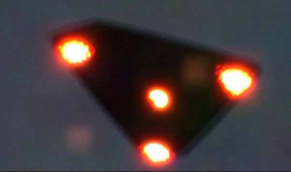

Une des "photographies" supposément prises le 15 en Wallonie (Belgique) par J. S. Henrardi

A Tubuai (Polynésie), 2 témoins observent 6 gros disques
lumineux stationnaires au-dessus des arbres avec des phares puissants qui éclairent la zone. 1 des disques semble
"répondre" à la sollicitation de la torche lumineuse d'un témoin par un puissant phare blanc. Les disques partent
doucement 1 par 1 SEPRA: PAN classé D.
En Wallonie (Belgique), J. S. Henrardi prend 2 clichés d'un triangle volant aux bords bisautés, semblable à celui de
Petit-Rechain. Ils ne seront diffusés publiquement
qu'en 2003.
À Hakui City (Japon), dans une lettre au major Shiotani à
propos d'un symposium sur l'Espace et les ovnis à venir, le 1er ministre japonais Toshiki Kaifu indique que les ovnis doivent être considérés comme
un phénomène réel et qu'il est temps de les étudiér sérieusement.
Le Point consacre un papier à l'activité de la commission du CNES sur les ovnis, mais sans apporter de révélations Roussel 1994.